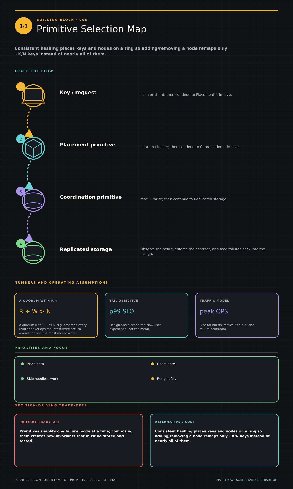

https://frosty110.github.io/js-drill/assets/system-design/infographics/components/c06/primitive-selection-map.pngThe low-level distributed-systems building blocks you compose under the hood of a scalable design: consistent hashing, bloom filters, sharding strategies, quorums, idempotency keys, leader election, and failure detection.
All questions, model answers and diagrams for Scale Primitives →